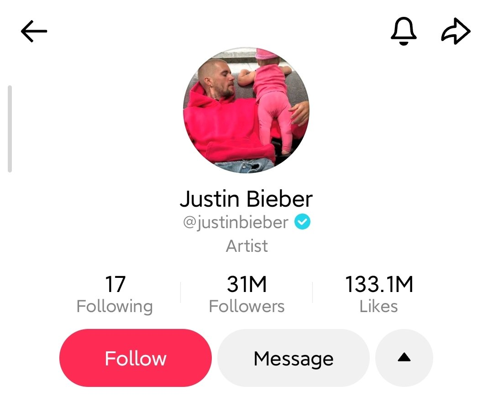
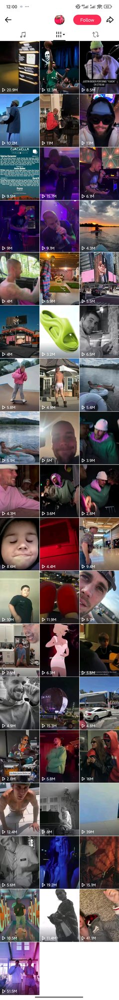

@justinbieber · 31M followers · labelled Artist
Fifty-two posts across five years, and then nothing. The most recent one is from 2022. No farewell post, no explanation, no pinned message. Just a trailing off. One post, then fewer posts, then silence. If you didn't already know who he was, the account wouldn't tell you much. It's not a profile that performs celebrity. It's more like a room someone left in a hurry.
↕ scroll to explore

All 52 posts — the whole archive in one scroll
I kept scrolling back through it, trying to find the shape of it. The early posts have a particular energy. Short clips, casual framing, the kind of content that looks effortless because someone made it look that way. But even then, the rhythm was never consistent. Gaps of weeks, sometimes months. Occasionally a burst of three or four posts close together, and then nothing again.
Fifty-two posts is not nothing. But spread across five years on a platform that lives and dies by daily posting, it feels like almost nothing.
This is not how TikTok is supposed to work
The platform rewards people who show up regularly, who train their audience to expect them. If you stop, the feed moves on without you. A creator who posts fifty-two times in five years is not really playing by those rules. They're just visiting occasionally.
For someone like Bieber, that probably doesn't matter. He doesn't need TikTok to know who he is. His whole identity as a celebrity exists outside the platform, in his music, in his history, in the way he's been talked about in media since he was a teenager. TikTok is just one more surface he passes through, not a place he actually lives.
But that's what made the account strange to look at. Because TikTok, more than almost any other platform, is built on the feeling of closeness. When it works, you feel like you're seeing someone rather than watching them. Bieber's posts don't quite give you that. They're polished in a way that quietly keeps you at arm's length. You can see him. You can't really reach him.
So I read the comments
I did what you always end up doing when the account itself doesn't say enough. I read the comments.
The comments are their own document entirely. Most of them aren't really about the posts at all. They're addressed directly to him, as if the video is just a way of getting his attention. Miss you. Come back. We're still here. There are long threads of fans updating each other on things he's said in interviews, or how he looked at an airport, or whether the rumours are true. The comment section has become the place where the story continues, even though the account stopped telling it.
He doesn't need to post for his presence to be felt there. The fans maintain it for him. They archive, they share, they keep the conversation going. The account has essentially been handed over, not officially, not deliberately, but in practice. It belongs to its audience now more than it belongs to him.
Once something is public, you lose a certain control
Once something is posted publicly, you lose a certain kind of control over what it means. You can delete posts, you can go silent, but you can't take back the relationship your audience has already built with your image. Bieber's TikTok is a good example of that. The account is quiet, but the conversation around it isn't.
Maybe that's why he stopped. Not because TikTok failed him, but because the whole thing it asks of you — showing up, being seen, performing a version of yourself that feels real — gets harder the longer you've been famous. The closeness the platform promises is the same thing that's been taken from him since he was fourteen. Perhaps fifty-two posts isn't abandonment. Perhaps it's a decision.
I came to his profile looking for a superstar and found a quiet account. I went to the comments looking for information and found a community that had decided the space still mattered, even if he'd moved on.
That gap between what a profile shows and what its audience makes of it. That's the thing I keep coming back to.
Comments